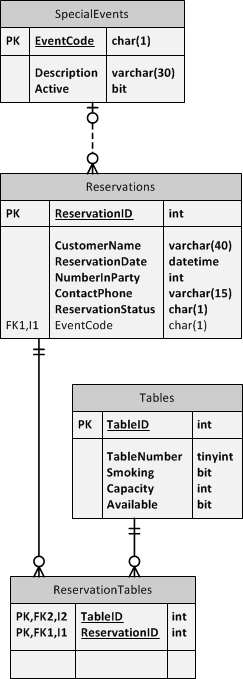

eRestuarant Sample/Demo
This sample uses the Entity Framework (EF) in a code-first approach for an existing database. Rather than reverse-engineer the database, these steps walk through creating the entities and the database context classes manually. The purpose of this is to gain a better understanding of how EF works as an ORM to map entities to a database.
Using the Entity Framework, it is possible to model the structure and relationships of database tables in our application. This model is known as a Database Model or simple a Model.
This demo assumes that you already have a VS solution with the Entity Framework included in the class library that the entities will be placed in. As a general rule-of-thumb, you should ensure that all projects in your VS solution that need Entity Framework are using the same version of the Entity Framework.
Coding the Entities
For the eRestaurant database, the following steps walk through coding the entities that will be mapped against the following three tables: SpecialEvents, Reservations and Tables.

eRestaurant - Demo Tables
The SpecialEvent Class
For the SpecialEvents database table, begin by creating a class with properties that will correspond to each column in the database table. Notice that the EventCode property requires the [Key] attribute to designate it as mapping to a column that is a primary key.
public class SpecialEvent
{
[Key]
public string EventCode { get; set; }
public string Description { get; set; }
public bool Active { get; set; }
}
SpecialEvent entity - properties matching columns
Next, add a navigation property that represents the relationship between the SpecialEvents and Reservations tables.
public class SpecialEvent
{
[Key]
public string EventCode { get; set; }
public string Description { get; set; }
public bool Active { get; set; }
public virtual ICollection<Reservation> Reservations { get; set; }
}
SpecialEvent entity - with Navigation Property
Lastly, there are some rules around the data in the SpecialEvents table (some of which are represented by constraints such as NOT NULL or lengths of varchar types). The following requirements will be supported through validation attributes and default values set through constructors. Note that we are including error messages should the validation rules in the attributes be violated. Attribute-based validation rules are checked as part of the SaveChanges() method on the database context class, just before the information is sent to the database.
- New
SpecialEventobjects are Active by default. - The
EventCodecan only be a single character. - The
Descriptionmust be between 5 and 30 characters (30 characters is the physical limit based on thevarchar(30)data type on the column, while the minimum value of five characters is based on a general business rule).
The first requirement will be met through the constructor; whenever a database table has a column with a default constraint, the default value should be set in the constructor of the entity class. The other requirements are met through C# attributes.
public class SpecialEvent
{
[Key]
[Required(ErrorMessage = "An Event Code is required (one character only)")]
[StringLength(1, ErrorMessage="Event Codes can only use a single-character code")]
public string EventCode { get; set; }
[Required(ErrorMessage = "A Description is required (5-30 characters)")]
[StringLength(30, MinimumLength=5, ErrorMessage="Descriptions must be from 5 to 30 characters in length")]
public string Description { get; set; }
public bool Active { get; set; }
public virtual ICollection<Reservation> Reservations { get; set; }
public SpecialEvent()
{
Active = true;
}
}
SpecialEvent entity - complete
The Reservation Class
For the Reservations database table, the following code shows properties for each column in the table. Note that since the primary key column - ReservationID - follows a pattern of ClassNameID (it matches the name of the class, with a suffix of ID), our property will not need the [Key] attribute to designate it as mapping to a primary key column. This pattern is one of many coding conventions used by the Entity Framework to simplify our C# code for the entity classes.
public class Reservation
{
public int ReservationID { get; set; }
public string CustomerName { get; set; }
public DateTime ReservationDate { get; set; }
public int NumberInParty { get; set; }
public string ContactPhone { get; set; }
public string ReservationStatus { get; set; }
public string EventCode { get; set; }
}
Reservation entity - properties matching columns
The Reservations table has direct relationships with three other tables in the database: SpecialEvents, ReservationsTables and Bills. We will need navigation properties for these. Since the Bills table is not on this partial ERD, we will not include a navigation property to that table.
For the ResevationTables, note that it is only a Gerund or Join Table (or, as Martin Fowler prefers to call it, a Link table). As such, ReservationTables is a normalization of a many-to-many relationship between Reservations and Tables:
Each Reservation may be for one or more Tables. Each Table may be set aside for one or more Reservations.
Since ReservationTables is being used in this way, we can simplify our model by using navigation properties to directly represent our many-to-many relationship and thereby omit having to create a ReservationTable entity.
The remaining table - SpecialEvents - will be mapped directly with a navigation property.
public class Reservation
{
public int ReservationID { get; set; }
public string CustomerName { get; set; }
public DateTime ReservationDate { get; set; }
public int NumberInParty { get; set; }
public string ContactPhone { get; set; }
public string ReservationStatus { get; set; }
public string EventCode { get; set; }
public virtual SpecialEvent Event { get; set; }
public virtual ICollection<Table> Tables { get; set; }
}
Resevation entity - with Navigation Properties
Note that since we have not yet coded the Table class, Visual Studio will alert us to a compiler error for referencing it in our navigation property. For the moment, ignore the error – it will go away once we have coded the Table entity.
As in the case of SpecialEvent, we will need to add attributes and a constructor for property initializations in order to support the following rules for the data in the Reservations table:
- CustomerName, ContactPhone and ReservationStatus are all required.
- We can accomodate up to 16 people in a reservation, but the minimum is one.
- Maximum string lengths should be applied as noted in the database column's data type.
public class Reservation
{
public int ReservationID { get; set; }
[Required]
[StringLength(40)]
public string CustomerName { get; set; }
public DateTime ReservationDate { get; set; }
[Range(1, 16)]
public int NumberInParty { get; set; }
[StringLength(15)]
public string ContactPhone { get; set; }
// TODO: (in BLL) Validate acceptable values using constants above
[Required, StringLength(1, MinimumLength=1)]
public string ReservationStatus { get; set; }
[StringLength(1)]
public string EventCode { get; set; }
public virtual SpecialEvent Event { get; set; }
public virtual ICollection<Table> Tables { get; set; }
}
Reservation entity - validation and business rules
As a final enhancement to the Reservation entity, it is helpful to note that the ReservationStatus column of the database table has a constraint restricting it to certain acceptable values. This kind of check constraint is too difficult to represent in any of the default validation attributes (at least, difficult without resorting to regular epxressions), and as such is best supported at the BLL. To aid in this, however, we can define a number of constants to represent those values and thereby make our code much easier to read once we reach the BLL.
public class Reservation
{
// constants for valid reservation status values
// B = Booked; C = Complete; N = No-show; X = Cancelled
public const string Booked = "B";
public const string Complete = "C";
public const string NoShow = "N";
public const string Cancelled = "X";
public int ReservationID { get; set; }
[Required]
[StringLength(40)]
public string CustomerName { get; set; }
public DateTime ReservationDate { get; set; }
[Range(1, 16)]
public int NumberInParty { get; set; }
[StringLength(15)]
public string ContactPhone { get; set; }
// TODO: (in BLL) Validate acceptable values using constants above
[Required, StringLength(1, MinimumLength=1)]
public string ReservationStatus { get; set; }
[StringLength(1)]
public string EventCode { get; set; }
public virtual SpecialEvent Event { get; set; }
public virtual ICollection<Table> Tables { get; set; }
}
Reservation entity - complete
The Table Class
Lastly, we can write the code for the entity representing the Tables database table. This database table will need to support the following constraints/rules:
- TableNumber is required and must be a positive number; we only anticipate growing to a maximum of 25 tables.
- By default a new table is Available
Rather than code this step-by-step, the following represents our finished Table entity.
public class Table
{
public int TableID { get; set; }
[Required(ErrorMessage="Table Number is required")]
[Range(1, 25, ErrorMessage="Table Number must be a positive number")]
public byte TableNumber { get; set; }
public bool Smoking { get; set; }
public int Capacity { get; set; }
public bool Available { get; set; }
public virtual ICollection<Reservation> Reservations { get; set; }
public Table()
{
Available = true;
}
}
Table entity - complete
A few points to note about creating Entity classes:
- Always name your entity classes in the singular. An instance of your entity class effectively represents a single row's worth of data in your database table.
- By default, Entity Framework can identify a property as mapping to a primary key column by the convention of the property being named either
IDorClassNameID.
Entity Framework has a number of conventions that work well with most database structures. One of those conventions is the naming of Entities in the singular form even though the database is named in the plural form. When a database is named in the plural form, it tends to still name the int-based PK column in its singular (with an ID suffix). - Even though Entity Framework has conventions to recognize a primary key mapped property, you can still use the
[Key]attribute. - Just because a relationship exists between two tables that you are mapping does not mean that you have to create a Navigation Property in your entities. Navigation properties are helpful for querying while in your BLL and for mirroring the foreign key constraints, but they are not necessary in your entities.
- Entity Framework has no built-in mechanism to represent default constraints that might appear in your database table's columns. If you want to "mirror" that functionality, then you should set any defaults in the constructor of your entity.
- Annotations help to represent simple constraints, but more complex ones - such as that seen in Reservations ReservationStatus column - are better enforced in the BLL.
- In all cases, it's helpful to check the database table itself for documentation. Many DBAs will place information about column values or usage right on the database tables and columns through the use of extended properties. You can often view this information when looking at the table design in SSMS
Coding the Database Context
The Database Context class is the class that acts as the DAL for our application. Under Entity Framework, a database context class is one that inherits from the DbContext class (in the System.Data.Entity namespace). Follow these steps to create a database context class that will support the entities coded above.
First, create the class itself. As a rule of thumb, the DAL is best declared as internal so as to deter "bypassing" the BLL.
internal class RestaurantContext : DbContext
{
}
RestaurantContext - inherting DbContext
Next, it is helpful to specify a named connection string that can be used to obtain the settings to connect to the database. This is most easily specified by using a parameterless constructor that passes a hard-coded name to one of the base-class constructors. By convention, the actual connnection string name should be prefixed by name=. In this example, use the name EatIn.
internal class RestaurantContext : DbContext
{
public RestaurantContext() : base("name=EatIn") { }
}
RestaurantContext - specify connection string name
Individual tables and their mappings are represented by DbSet<T> properties on the database context class. The DbSet<T> class handles the details of the mapping of the table columns to the entity properties. In the database context class, the DbSet<T> properties should be named the same as the actual database tables, to leverage the default conventions of the Entity Framework in mapping the DbContext's properties to the tables.
internal class RestaurantContext : DbContext
{
public RestaurantContext() : base("name=EatIn") { }
public DbSet<Table> Tables { get; set; }
public DbSet<SpecialEvent> SpecialEvents { get; set; }
public DbSet<Reservation> Reservations { get; set; }
}
RestaurantContext - create properties as maps to tables
Because of the join table ReservationTables operating as the "middleman" between the Reservations and Tables, we need to clarify that mapping in our database context class. Mappings and other aspects of our database model can be controlled through the DbContext.OnModelCreating() method. By overriding this method, we can add our custom mappings. When overriding OnModelCreating(), it is important to remember to call the base method's implementation before you exit the method.
internal class RestaurantContext : DbContext
{
public RestaurantContext() : base("name=EatIn") { }
public DbSet<Table> Tables { get; set; }
public DbSet<SpecialEvent> SpecialEvents { get; set; }
public DbSet<Reservation> Reservations { get; set; }
protected override void OnModelCreating(DbModelBuilder modelBuilder)
{
modelBuilder
.Entity<Reservation>().HasMany(r => r.Tables)
.WithMany(t => t.Reservations)
.Map(mapping =>
{
mapping.ToTable("ReservationTables");
mapping.MapLeftKey("ReservationID");
mapping.MapRightKey("TableID");
});
base.OnModelCreating(modelBuilder);
}
}
RestaurantContext - complete
As the number of entities grows in our system, we can add more properties to our database context class to map those entities to additional database tables.
Here are a few items to note when creating a database context class.
- Inherit from
DbContext - Call base constructor with
: base("name=EatIn")to connect with specific connection string in web.config or app.config DbSet<T>is the appropriate data type to map properties on the database context to tables in the database- Override
OnModelCreating()for any non-default aspects of the relationships between the entities in the model (such as the many-to-many relationship between the Table and Reservation classes)